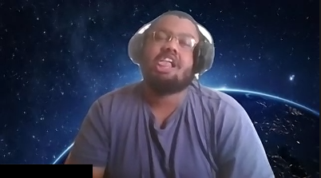

Bonjours, je m'appelle Daniel
Voici ma tête le matin

Voici ma tête le matin
Si j'etais un animal je serais un ours, car au collège j'etais un peu plus imposantque les autres enfants depuis c'est devenue mon animal fétiche.
Si j'étais un sous genre de l'animation japonaise (ça va commence à ce voir) je serais un isekai car j'aime les histoire où le personnage principale attéris dans un monde parallèle.
Si j'étais un pays je serais le japon car j'aime la culture Japonais.
Si j'étais une ile je serais l' Ile de la Reunion car les paysages sont magnifique et petit + j'ai grandis là bas.
Si j'étais une console je serais un Pc.
Né à Madagascar, le grand Daniel a honoré cette île de sa présence pendant 2 ans, avant de voguer vers la Réunion. Cette île a été le cocon qui a fait de Daniel le papillon grandiose que nous connaissons tous (et adorons tous) aujourd’hui. En l’an de grâce 2016, Big D est arrivé en France. Un événement qui en a marqué plus d’un, et c’est grâce à lui que 2 ans plus tard, la France soulève à nouveau la Coupe du Monde. Récemment, Daniel a étendu son influence à l’Allemagne. Depuis son séjour chez nos voisins, l’Oktoberfest s’appelle le Dantoberfest. Ce sont ses passions qui lui ont permis d’atteindre les hauteurs qu’il occupe désormais. Les leçons qu’il a tiré des mangas/animes lui ont donné la force et le mental de devenir le meilleur. Les réflexes et réflexions acquis via les jeux vidéos font de lui l’adversaire redoutable que l’on connaît. En quelques mots, merci Daniel pour ta magnificence, le Monde est honoré d’avoir enfanté un tel homme.
Grand homme venu tout droit de Madagascar. Il est arrivé en France en 2016 à l’âge de 19 ans avec un CAP carreleur en poche. Il avait passé son diplôme à la Réunion où il a grandi. Malheureusement ce métier ne lui a pas plu et il s’est mis à chercher dans la vente et le commerce à son arrivée en France. Après avoir essayé ces domaines, il s’est de nouveau réorienté, ça ne lui convenait pas, et comment lui en vouloir ? Il est fait pour accomplir de grandes choses ! C’est ainsi, qu’il s’est trouvé une vocation pour le développement web où il s’épanouit et pour laquelle il est si connu aujourd’hui. Mais que connaissez-vous de Daniel ? Ses passions : les mangas et les animés ainsi que les jeux vidéo. Il a même voulu être joueur professionnel sur Spiral Knight, mais évidemment il était trop fort et il n’y avait même pas de challenge pour lui. Il préfère jouer chill pour ne pas faire trop d’ombre aux autres, quel homme ce Daniel !